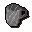

Beer glass

| Config name | beer_glass |
| Item id | 1919 |
| Value | 2 gp |
| Weight | 50g |
| Members | No |
| Tradeable | Yes |
| Stackable | No |
| Defined in | scripts/skill_cooking/configs/cooking_generic/cooking.obj |
Beer glass
I need to fill this with beer.
Show 8 ground spawns on the world map → Open in knowledge graph →
How to make
| Skill | Level | XP | Ingredients | Tool | How | Where | Makes |
|---|---|---|---|---|---|---|---|
| Crafting | 1 | 17.5 | chat menu Beer Glass / Vial / Orb | 1 |
Ground spawns
| Area | Coordinates | Level | Count | Map |
|---|---|---|---|---|
| Agility Arena | 2798, 3156 | 0 | 1 | view |
| Agility Arena | 2798, 3160 | 0 | 1 | view |
| Agility Arena | 2798, 3161 | 0 | 1 | view |
| Agility Arena | 2799, 3155 | 0 | 1 | view |
| Brimhaven | 2794, 3165 | 0 | 1 | view |
| Brimhaven | 2795, 3160 | 0 | 1 | view |
| Brimhaven | 2795, 3165 | 0 | 1 | view |
| Burthorpe | 2907, 3538 | 0 | 1 | view |
Referenced in scripts
scripts/general_use/scripts/barrels.rs2scripts/skill_crafting/scripts/glass/glass.rs2